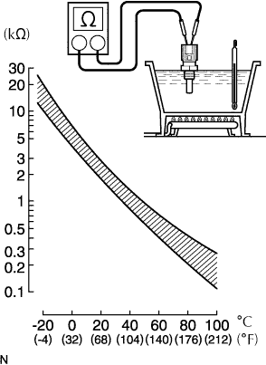

CẢM BIỆN NHIỆT ĐỘ NƯỚC LÀM MÁT ĐỘNG CƠ > KIỂM TRA |
| 1. KIỂM TRA CẢM BIẾN NHIỆT ĐỘ NƯỚC LÀM MÁT |
|  |
Cắm một phần cảm biến vào nước và đun nóng nước.
Đo điện trở giữa các cực.
| Điều kiện | Điều kiện tiêu chuẩn |
| Xấp xỉ 20°C (68°F) | 2.32 đến 2.59 kΩ |
| Xấp xỉ 80°C (176°F) | 0.310 đến 0.326 kΩ |